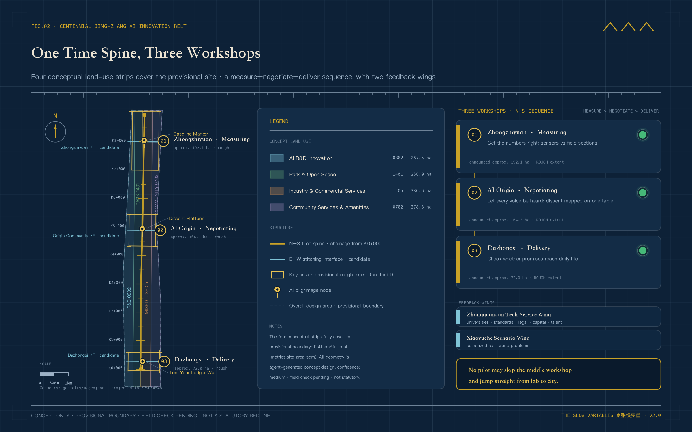
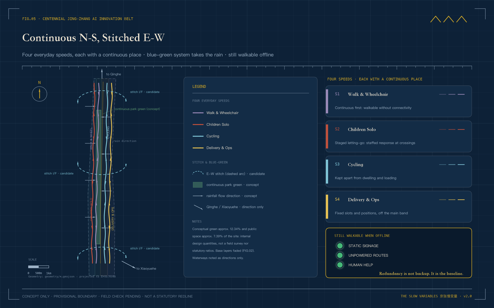
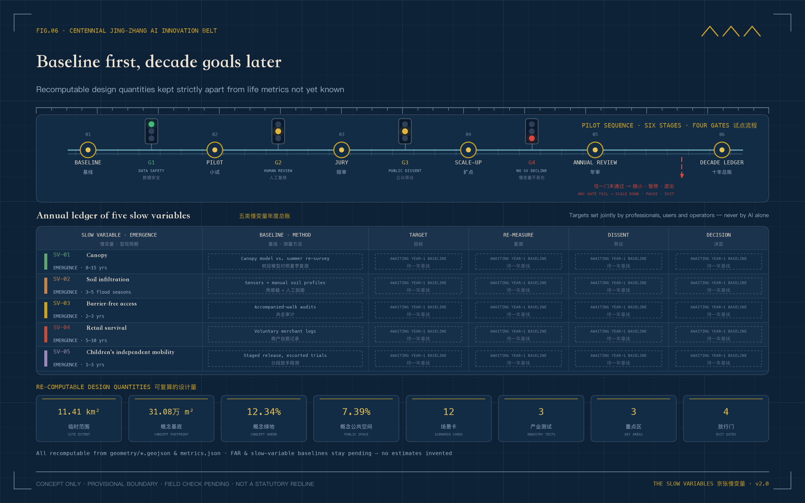

Tree Shade
Emergence · 8–15 years
Canopy models are checked against summer field re-surveys to see whether continuous shade truly forms.
Method: canopy model + quarterly re-survey ｜ Baseline: pending one year of measurement
CENTENNIAL JING-ZHANG AI INNOVATION BELT · CONCEPT PROPOSAL · V2.0
How a city decides how fast AI may go
Two clocks run in the city at once. One is fast: models change every few months, and a pilot can scale within a quarter. One is slow: shade, soil, accessibility, shop survival and children walking alone take years to show. This proposal lets five slow variables and four exit gates speak for the slow clock — pilots may move fast; expansion must be reviewed slowly.
Speed must bow to the slope.When the Beijing–Zhangjiakou railway opened in 1909, Zhan Tianyou met a grade no locomotive could climb at Guan'gou. Instead of waiting for a stronger engine, he folded the line into a chevron and traded switchbacks for height. A century later AI enters the same corridor — the models are fast, the city is slow, and the slope is still here.
The fast clock can rush projects online — but who speaks for the slow one? The answer is five slow variables, SV-01 to SV-05: they emerge over years and are today only a measurement framework with no corridor baseline — one year of measuring comes before any threshold.
1 tick = 1 quarter · models change every few months
1 ring ≈ 10 years · public value takes years to emerge
Emergence · 8–15 years
Canopy models are checked against summer field re-surveys to see whether continuous shade truly forms.
Method: canopy model + quarterly re-survey ｜ Baseline: pending one year of measurement
Emergence · 3–5 flood seasons
Whether rainwater actually sinks into the ground only becomes clear after several flood seasons.
Method: sensors + manual soil profiles in parallel ｜ Baseline: pending one year of measurement
Emergence · 2–3 years
Whether ramps, crossings and staffed counters truly work must be tested by different people, repeatedly.
Method: co-audits by wheelchair, stroller and walking users ｜ Baseline: pending one year of measurement
Emergence · 5–10 years
Whether small street shops can stay — not displaced by new rents and new footfall — takes years to see.
Method: voluntary merchant records ｜ Baseline: pending one year of measurement
Emergence · 1–3 years
Whether children can safely finish a route on their own is observed through staged letting-go walks.
Method: staged accompanied letting-go trials ｜ Baseline: pending one year of measurement
Technical novelty only earns the right to a small pilot — long-term public value alone decides whether a project may stay.
Any AI scenario entering public space must pass four railway-signal gates in sequence before it may expand. Fail any one, and the project scales down, pauses, or exits — an exit record is not a stain of failure; it proves the city can stop an ineffective pilot in time.
Data boundaries in writing: faces and identifiable traces excluded by default; raw-data rights, retention and deletion published before any pilot.
Field human review in place: when numbers conflict with on-site judgement, the better-looking record may not be used to apply for scale-up.
Dissent has a place to stop: record who objected, why, and how the plan was revised; the annual jury can veto expansion.
All five slow variables are checked against the one-year baseline: decline in any one suspends the right to expand.
ANY GATE FAILED → SCALE DOWN · PAUSE · EXIT
Three scope levels do three different jobs: the 43.6 km² coordination scope unifies measurement standards, the 11.4 km² overall-design scope weaves a continuous spatial network, and the 368.4 ha key scope carries on-site decisions. The north–south spine keeps long-term watch; three east–west interfaces stitch campus, community, rail and park back together. No pilot may skip the middle stop and jump straight from the lab to the whole city.

KEY AREASThree Civic Yards
MEASURE ｜ sensors + human review
An open baseline laboratory, an ecological observation gallery toward Qinghe, a human-review hall and a garden of failed samples. Open does not mean publishing personal data — devices exclude faces and identifiable traces by default.
NEGOTIATE ｜ public dissent + plan revision
A slow-variable reading room, a route co-drawing table, an accessibility audit bench and a non-digital feedback box. Disagreement is not rushed away — routes are drawn on the same table, objections and revisions recorded.
DELIVER ｜ services, small shops and the annual ledger
A slow-variable ledger wall, a service appeal desk, an annual jury table and a small delivery market. The ledger shows the projects that stayed and the projects that exited, side by side.
Feeds universities, standards, legal, capital and talent support back into the three yards.
Feeds authorised real-world problems and everyday needs back into the three yards.

Publishes measurement methods and failure records; honour goes only to reproducible method.
Preserves minority opinions and revised versions, turning disagreement into public archive.
Shows long-term public gains and exited projects — never ranked by funding or traffic.
The first three cards (01*–03*) are controlled industry tests; the other nine enter daily service. Every card states its concrete action in the city and the boundary it may never cross — data stays voluntary, minimised, de-identified, human-reviewed and reversible.
GROUPWatching the Land · Industry Tests
Compare canopy models with summer field re-surveys.
Modelled estimates must never pass as measured data
Sensor readings run in parallel with manual soil profiles.
Never substitutes for drainage engineering appraisal
GROUPWatching the Streets
Wheelchair, stroller and walking users walk the line together.
Voluntary participation; paper feedback always kept
Staged letting-go; crossings answered by on-site staff.
No facial recognition, no covert tracking
Device-side aggregation; traffic staff confirm on site.
Personal traces never used for enforcement
GROUPWatching the Blocks
Merchants voluntarily record trading spans and service needs.
Never used for rent, demolition or credit scoring
Reads ambient illuminance; complaints trigger dimming.
No identity recognition; homes left undisturbed
GROUPWatching Services · Research · The Year
Anonymous queue hints; staff can take over at any moment.
Offline service channels always remain
Public vulnerability reviews on synthetic or cleared data.
Vulnerabilities disclosed by severity grade
Local content packs with human historical review.
Usable without any location services
Explains published clauses and names the responsible party.
Never gives case-specific legal conclusions
Publishes aggregated evidence; dissent enters scale-up decisions.
The jury may veto expansion
Every figure below can be re-computed from geometry/*.geojson and metrics.json; all are conceptual design quantities inside the submitted geometry — not existing-condition surveys, not statutory indicators. Two slots stay deliberately empty: no estimates are filled in.
// Blank cells are quality control, not omission. Targets are set jointly by professional teams, users and operators — never generated by AI alone.

Not a string of distant years, but four actions repeated every year. The phasing geometry expresses a first-stage discussion scope — it implies no investment, no construction start, and no government arrangement.
Zhongzhiyuan starts the canopy, soil and post-rain recovery baselines.
The three interfaces accept co-testing of heat comfort, accessibility and children's routes.
Dazhongsi records merchants, staffed services and public-space use.
Projects kept, revised and exited face the annual jury together.
Baseline, field audits and three reversible small pilots only.
Only scenarios that pass all four gates scale; the three cross-interfaces are repaired.
The annual ledger decides what is fixed in place, relocated, or removed.
This proposal is most easily misread in three places: a provisional extent may be read as an official redline, future targets as current data, and conceptual operations as government commitments. Every public version therefore keeps the labels "provisional constraint, concept advice, pending professional confirmation".